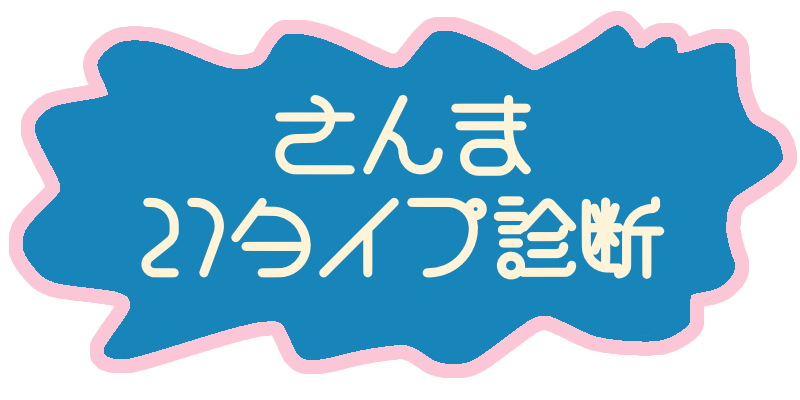

Q1. 友達が何か悩んでいるみたい。どうする?
Q2. 休み時間はどう過ごすことが多い?
Q3. 宿題が終わらず困っています。どうする?
Q4. 家事や勉強など、やるべきことがある日に友達に遊びに誘われた。どうする
Q5. 人前でほめられた！
Q6. 自分よりも注目されている人がいると、どう感じる？
Q7. 大きな失敗をしてしまった！誰かに話す?
Q8. 楽しみにしていた予定が突然中止になったときの反応は？
Q9. クラスの出し物をグループで決めることに。どう動く?
Q10. 知らない人ばかりの集まりではどう動く？
Q11. あまり公にしていない趣味について聞かれた。どう答える?
Q12. 苦手な人と同じグループになったらどうする？
Q13. 大事な試験や発表の前日はどんな気持ち？
Q14. 知らない場所で道に迷ったらどうする?
Q15. 2つの服で迷っているときの決め手は?
Q16. 友達がルールを破っていたらどうする？
Q17. 何も予定がない休日はどう過ごす?
Q18. 落ち込んでいるときはどうする?